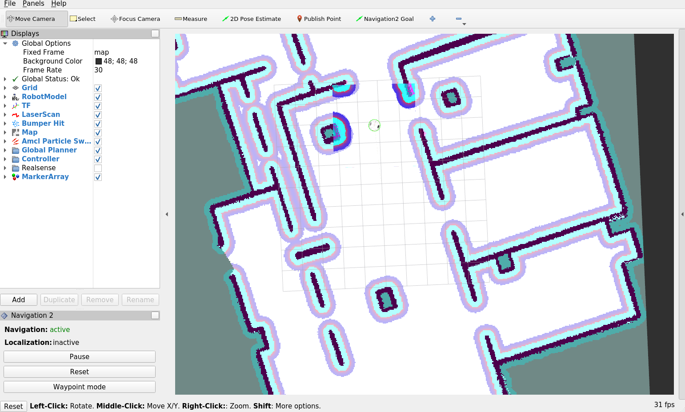

TIAGo Mapping tutorial ROS2
Purpose
This tutorial shows how to make tiago navigate and create a map using the navigation from ros2. You can find further information about that in the nav2_SLAM tutorial.
Pre-Requisites
First make sure that the tutorials are properly installed along with the tiago simulation, as shown in the tutorials installation section.
Execution
First of all open two consoles and source ros setup
source /opt/ros/foxy/setup.bash
In the first console launch the following simulation
ros2 launch tiago_2dnav_gazebo tiago_mapping_gazebo.launch.py
Note that a rviz will also show up in order to visualize the mapping process.
In the second console launch the keyboard teleoperation node
ros2 run teleop_twist_keyboard teleop_twist_keyboard --ros-args --remap cmd_vel:=key_vel
You can use the keyboard to navigate the robot and create the map.

As shown in the nav2_SLAM tutorial you can save the map by doing: